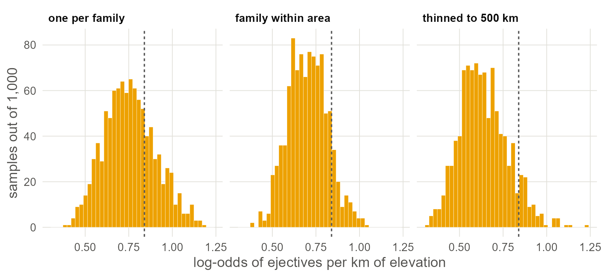

9 Sampling instead of modelling
The older remedy for related languages is to leave most of them out. Draw balanced samples the way the typological tradition does, a thousand times over, and see what the slope does.
9.1 Set up
library(spdep)
library(mgcv)
library(ggplot2)
base <- "https://rehan-muh.github.io/tutorials/data/"
d <- read.csv(paste0(base, "languages.csv"))
d$elev_km <- d$elevation / 1000
d$family <- factor(d$family)
# great-circle distance between every pair of languages, in km
km <- sp::spDists(as.matrix(d[, c("lon", "lat")]), longlat = TRUE)
m0 <- glm(ejectives ~ elev_km, family = binomial, data = d)9.2 The sampling tradition
Long before phylogenetic regression reached typology, the field had its own answer to the problem of Chapter 1: if related and neighbouring languages are not independent, do not put them in the same sample. Choose languages so that no two are close relatives, spread them over the world, and then use ordinary statistics on what is left. Dryer’s (1989) genus samples and Perkins’s (1989) one-per-family samples are the classic designs; Rijkhoff and Bakker (1998) and Bickel (2008) refine them.
This chapter treats sampling as what it is, a statistical method, and asks of it what the earlier chapters asked of the models. Does it change the answer? What does it cost? Does it remove the dependence it was designed to remove?
9.3 Three designs
Each design is a function that takes the full data and returns a random balanced sample.
# one language drawn at random from every family
one_per_family <- function(d) {
pick <- tapply(seq_len(nrow(d)), d$family,
function(i) i[sample.int(length(i), 1)])
d[pick, ]
}
# one language per family within each macroarea, so that families
# spread over several areas contribute once per area
family_by_area <- function(d) {
cell <- interaction(d$family, d$macroarea, drop = TRUE)
pick <- tapply(seq_len(nrow(d)), cell,
function(i) i[sample.int(length(i), 1)])
d[pick, ]
}
# spatial thinning: visit the languages in random order and keep one
# only if it is at least min_km from every language already kept
thinned <- function(d, min_km) {
keep <- integer()
for (i in sample.int(nrow(d))) {
if (all(km[i, keep] >= min_km)) keep <- c(keep, i)
}
d[keep, ]
}Draw one sample of each kind and count what is left of the 500 languages and the 50 with ejectives.
set.seed(1989)
one <- list("one per family" = one_per_family(d),
"family within area" = family_by_area(d),
"thinned to 500 km" = thinned(d, 500))
sapply(one, function(s) c(languages = nrow(s),
with_ejectives = sum(s$ejectives)))## one per family family within area thinned to 500 km
## languages 110 117 144
## with_ejectives 22 22 16The first cost is plain. Between 70% and 80% of the data are gone.
9.4 One sample, one answer
Fit the regression of Chapter 1 to the one-per-family sample.
m_one <- glm(ejectives ~ elev_km, family = binomial, data = one[[1]])
round(summary(m_one)$coefficients, 3)## Estimate Std. Error z value Pr(>|z|)
## (Intercept) -1.941 0.330 -5.89 0.000
## elev_km 0.754 0.267 2.82 0.005This is the analysis a careful typologist of the sampling tradition would report. It is one draw. Nothing in the method says which language should stand for Afro-Asiatic or Atlantic-Congo, so another researcher with the same database and the same design would have drawn other languages.
9.5 A thousand samples
So draw a thousand of each and keep the intercept, the slope, its standard error and its p-value every time.
fit_sample <- function(s) {
m <- glm(ejectives ~ elev_km, family = binomial, data = s)
c(coef(m), coef(summary(m))["elev_km", c(2, 4)], nrow(s))
}
designs <- list("one per family" = function() one_per_family(d),
"family within area" = function() family_by_area(d),
"thinned to 500 km" = function() thinned(d, 500))
set.seed(1989)
draws <- do.call(rbind, lapply(names(designs), function(design) {
r <- as.data.frame(t(replicate(1000, fit_sample(designs[[design]]()))))
names(r) <- c("intercept", "slope", "se", "p", "n")
r$design <- design
r
}))
draws$design <- factor(draws$design, levels = names(designs))summarise <- function(r) {
c(languages = median(r$n),
slope = median(r$slope),
lowest = unname(quantile(r$slope, 0.025)),
highest = unname(quantile(r$slope, 0.975)),
std_error = median(r$se),
significant = mean(r$p < 0.05))
}
tab <- t(sapply(split(draws, draws$design), summarise))
round(rbind(tab, "all 500 languages" = c(500, coef(m0)[2], NA, NA,
sqrt(vcov(m0)[2, 2]), 1)), 2)## languages slope lowest highest std_error significant
## one per family 110 0.75 0.49 1.07 0.26 0.99
## family within area 117 0.70 0.50 0.94 0.25 1.00
## thinned to 500 km 149 0.62 0.40 0.92 0.25 0.89
## all 500 languages 500 0.84 NA NA 0.15 1.00Read the columns from left to right. slope is the median estimate over a thousand samples and lowest to highest is the range that holds 95% of them. std_error is the typical standard error of a single sample. significant is the share of samples in which the slope passes the 5% test.
ggplot(draws, aes(slope)) +
geom_histogram(bins = 40, fill = "#EDA100", colour = "white",
linewidth = 0.1) +
geom_vline(xintercept = coef(m0)[2], linetype = "22", colour = "grey35") +
facet_wrap(~design) +
labs(x = "log-odds of ejectives per km of elevation",
y = "samples out of 1,000")
Figure 9.1: The elevation slope in 1,000 random samples of each design. The dashed line is the slope from all 500 languages. Every bar is a result somebody could have published.
Three things stand out.
The estimate is a lottery. With one language per family, the slope ranges from 0.49 to 1.07 depending on nothing but which language happened to be drawn. That spread is not in the standard error of any single sample. It is extra uncertainty the method creates and then hides.
The standard error has roughly doubled. A single sample’s error is around 0.26, against 0.15 for the full data. Chapter 5 reached errors of 0.3 to 0.4 too, but by using all 500 languages and saying how they depend on each other. Sampling gets there by discarding information.
The conclusion mostly survives. 99% of one-per-family samples and 89% of thinned samples still find a positive slope at the 5% level. For this hypothesis, sampling and modelling agree on the direction.
9.6 The regression lines
Draw the lines the samples produce: 150 from each design, with the full-data naive line and the line of a model that keeps every language.
The model is the cheapest joint model in this series, a GAM with a family intercept and a spline on the sphere (Chapter 7), and its line is averaged over the sample as in Chapter 5.
x <- seq(0, 4.5, by = 0.1)
g <- gam(ejectives ~ elev_km + s(family, bs = "re") +
s(lat, lon, bs = "sos", k = 60),
family = binomial, data = d, method = "REML")
b <- coef(g)[["elev_km"]]
at_sea <- predict(g) - b * d$elev_km # every language moved to 0 km
model <- data.frame(elev_km = x,
p = sapply(x, function(xi) mean(plogis(at_sea + b * xi))))
naive <- data.frame(elev_km = x)
naive$p <- predict(m0, newdata = naive, type = "response")
some <- do.call(rbind, lapply(split(draws, draws$design), head, 150))
some$id <- seq_len(nrow(some))
curves <- merge(some[, c("id", "design", "intercept", "slope")],
data.frame(elev_km = x))
curves$p <- plogis(curves$intercept + curves$slope * curves$elev_km)
ggplot(curves, aes(elev_km, p)) +
geom_line(aes(group = id), colour = "#EDA100", alpha = 0.25,
linewidth = 0.3) +
geom_line(data = naive, linetype = "22", colour = "grey35") +
geom_line(data = model, colour = "grey10", linewidth = 0.9) +
facet_wrap(~design) +
labs(x = "elevation (km)", y = "probability of ejectives")
Figure 9.2: Regression lines from 150 random samples of each design (thin yellow lines), the naive regression on all 500 languages (dashed) and a joint model fitted to all 500 (solid black). Each yellow line is one researcher’s answer.
In the two family-based designs the yellow lines sit above both reference lines at every elevation, and that is not noise. A one-per-family sample counts families, not languages, and ejectives are more common among families than among languages, because the large families that fill the full data mostly lack them. A balanced sample answers a different question: what share of lineages have the feature. The thinned samples keep languages roughly in proportion to the land they cover, so they stay near the naive line.
In every design the lines fan out at altitude. A sample of a hundred or so holds only a handful of highland languages, and each draw holds different ones. The solid black line, from a model that uses all 500 languages and accounts for families and location, is lower and flatter than nearly all of them.
9.7 Does sampling remove the dependence?
The point of a balanced sample is that its languages are independent. Check it the way Chapter 1 checked the full data: Moran’s I on the residuals, with each language linked to its five nearest neighbours in the sample.
residual_moran <- function(s) {
m <- glm(ejectives ~ elev_km, family = binomial, data = s)
xy <- as.matrix(s[, c("lon", "lat")])
nb <- knn2nb(knearneigh(xy, k = 5, longlat = TRUE))
lw <- nb2listw(make.sym.nb(nb), style = "W")
test <- moran.test(residuals(m, type = "pearson"), lw)
c(I = unname(test$estimate[1]), p = test$p.value)
}
set.seed(1989)
checks <- lapply(designs, function(draw) {
t(replicate(200, residual_moran(draw())))
})
round(sapply(checks, function(r) {
c(median_I = median(r[, "I"]), share_autocorrelated = mean(r[, "p"] < 0.05))
}), 2)## one per family family within area thinned to 500 km
## median_I 0.27 0.28 0.2
## share_autocorrelated 1.00 1.00 1.0Every one of the 600 samples still has spatially autocorrelated residuals. One language per family removes relatives. It does not remove neighbours: unrelated families sit side by side in the Caucasus, the Pacific Northwest and the Andes, and a sample that takes one language from each still has clusters. Thinning to 500 km lowers Moran’s I a little and does not remove it either, because the regions where ejectives are at home are much wider than 500 km. Thinning further would, at the price of a sample too small to estimate anything.
Watch out. A balanced sample changes the unit of analysis from languages to lineages or to regions. That can be exactly what a question needs, for example “how many independent origins does this feature have?”. It is a poor way to estimate a slope, because the slope is then estimated from a fraction of the evidence, and which fraction is left to chance.
With your own data. If you are working in the sampling tradition, do what this chapter does: draw the sample many times and report the distribution of the estimate, not one draw. If your database has genera, replace
d$familywith the genus column inone_per_family()to get Dryer’s design.
9.8 What to carry forward
- A balanced sample is a model in disguise. One language per family is the family-intercept model of Chapter 2 with everything inside a family thrown away (compare Jaeger et al. 2011).
- Sampling makes the standard error honest by making the data small. A dependence model makes it honest by describing the dependence, and keeps the data.
- Whatever the design, one draw is one answer. The spread between draws is real uncertainty and belongs in the report.
- Balanced samples are still spatially clustered. Genealogical balance is not independence.
Chapter 10 puts sampling and modelling on equal terms, with data where the true slope is known.